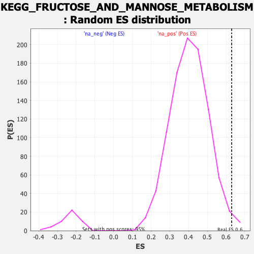

| | | Dataset | DGErankName |
| Phenotype | NoPhenotypeAvailable |
| Upregulated in class | na_pos |
| GeneSet | KEGG_FRUCTOSE_AND_MANNOSE_METABOLISM |
| Enrichment Score (ES) | 0.62972736 |
| Normalized Enrichment Score (NES) | 1.5575635 |
| Nominal p-value | 0.012591816 |
| FDR q-value | 0.10778374 |
| FWER p-Value | 0.649 |
Table: GSEA Results Summary
 Fig 1: Enrichment plot: KEGG_FRUCTOSE_AND_MANNOSE_METABOLISM
Fig 1: Enrichment plot: KEGG_FRUCTOSE_AND_MANNOSE_METABOLISM
Profile of the Running ES Score & Positions of GeneSet Members on the Rank Ordered List
| SYMBOL | RANK IN GENE LIST | RANK METRIC SCORE | RUNNING ES | CORE ENRICHMENT | | 1 | PFKFB1 | 19 | 13.171 | 0.3308 | Yes |
| 2 | FBP2 | 81 | 4.302 | 0.4353 | Yes |
| 3 | FPGT | 224 | 3.178 | 0.5061 | Yes |
| 4 | FBP1 | 419 | 2.617 | 0.5593 | Yes |
| 5 | GMDS | 797 | 2.020 | 0.5856 | Yes |
| 6 | PFKFB4 | 873 | 1.947 | 0.6297 | Yes |
| 7 | KHK | 2472 | 1.171 | 0.5546 | No |
| 8 | PFKFB3 | 3361 | 0.919 | 0.5196 | No |
| 9 | ALDOC | 3510 | 0.882 | 0.5321 | No |
| 10 | PFKFB2 | 3809 | 0.816 | 0.5332 | No |
| 11 | PMM2 | 3822 | 0.814 | 0.5529 | No |
| 12 | HK2 | 4251 | 0.717 | 0.5429 | No |
| 13 | ALDOB | 5671 | 0.408 | 0.4603 | No |
| 14 | PMM1 | 6043 | 0.328 | 0.4442 | No |
| 15 | AKR1B1 | 6380 | 0.261 | 0.4288 | No |
| 16 | MTMR1 | 6871 | 0.179 | 0.4012 | No |
| 17 | GMPPB | 7068 | 0.144 | 0.3920 | No |
| 18 | ALDOA | 7359 | 0.099 | 0.3755 | No |
| 19 | MTMR2 | 8537 | -0.046 | 0.2995 | No |
| 20 | TPI1 | 8914 | -0.088 | 0.2771 | No |
| 21 | HK3 | 10197 | -0.200 | 0.1982 | No |
| 22 | PHPT1 | 10528 | -0.224 | 0.1822 | No |
| 23 | HK1 | 10741 | -0.238 | 0.1743 | No |
| 24 | MPI | 11197 | -0.274 | 0.1514 | No |
| 25 | PFKP | 11249 | -0.277 | 0.1550 | No |
| 26 | GMPPA | 11485 | -0.296 | 0.1471 | No |
| 27 | MTMR6 | 11636 | -0.309 | 0.1451 | No |
| 28 | GFUS | 13120 | -0.460 | 0.0595 | No |
| 29 | MTMR7 | 13689 | -0.545 | 0.0360 | No |
| 30 | FCSK | 14212 | -0.649 | 0.0182 | No |
| 31 | PFKM | 14869 | -0.896 | -0.0022 | No |
| 32 | SORD | 15138 | -1.195 | 0.0104 | No |
Table: GSEA details [plain text format]

Fig 2: KEGG_FRUCTOSE_AND_MANNOSE_METABOLISM: Random ES distribution
Gene set null distribution of ES for KEGG_FRUCTOSE_AND_MANNOSE_METABOLISM